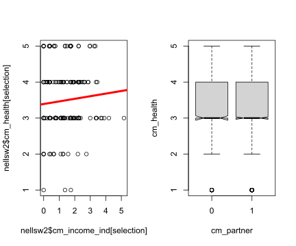

The Conceptual Model

Figure 1: two direct effects
Figure 1: two direct effects
In a conceptual model, the concepts are normally placed in a rectangular. We have three concepts, $ X_1 \(** , **\) X_2 \(** and **Y**. The single headed arrow indicates that you assume causal (linear) relations from **\) X_1 \(** and **\) X_2 $ (on the left) to Y on the right. Thus: if $ X_1 $ or $ X_2 $ increases, Y will increase as a result as well.
In this example we have to direct effects. The implicit assumption of a conceptual model is that (both) concepts have an additive effect. Naturally, there would in principle be nothing wrong with a multiplicative effect/model.
It is not always necessary to label the paths but for this tutorial it will turn out to be handy. Normally, when there is no sign (or label) it is assumed that the path has a positive valence. It is, however, good practice to include the valence of the paths in your conceptual models, i.e. replace a with + or -.
{{% alert note %}}
Please note, I use the label concept and not variable. A variable is something that is part of your dataset, measured by, for example, a survey item. A concept is a theoretical construct, and the concept as intended may have relations - according to your theory - with other concepts. This concept is measured by one or more variables, the ‘concept as measured’.
It is generally a good idea to use concepts that are (very) close to your actual measurements. Thus, although you may use the concept social cohesion in your conceptual model, this concept is overly broad and there is a fierce debate on how it should be defined. If you have measured social cohesion with for example a single item on generalized trust (“Generally speaking would you say that most people can be trusted or that you can’t be too careful in dealing with people?”) why not use the concept generalized trust in your conceptual model?
{{% /alert %}}
Hypo1: $ X_1 $ leads to Y.
Hypo2: $ X_2 $ leads to Y.
Normally we do not have an hypothesis on the association between $ X_1 $ and $ X_2 $. If we do, we could summarize our ideas with the following conceptual model:

Figure 2: two direct effects and association
Hypo3: $ X_1 $ and $ X_2 $ are positively associated.
$ X_1 $ is occupational success.
$ X_2 $ is being in a relationship (YES/NO)
Y is health
Hypo1: Occupational success will lead to better health. (Money makes happy.) Hypo2: Being in a relationship will lead to better health. (Love makes happy.)
or, following the syntax of the R package Lavaan
The single ~ indicates a direct effect (regression path).
The double ~~ indicates a (partial), (error)variance.
Load the NELLS data.
rm(list = ls()) #empty environment
require(haven)
nells <- read_dta("../static/NELLS panel nl v1_2.dta") #change directory name to your working directoryOperationalize concepts.
# We will use the data of wave 2.
nellsw2 <- nells[nells$w2cpanel == 1, ]
# As an indicator of occupational success we will use income in wave 2.
table(nellsw2$w2fa61, useNA = "always")
attributes(nellsw2$w2fa61)
# recode (I will start newly created variables with cm from conceptual models)
nellsw2$cm_income <- nellsw2$w2fa61
nellsw2$cm_income[nellsw2$cm_income == 1] <- 100
nellsw2$cm_income[nellsw2$cm_income == 2] <- 225
nellsw2$cm_income[nellsw2$cm_income == 3] <- 400
nellsw2$cm_income[nellsw2$cm_income == 4] <- 750
nellsw2$cm_income[nellsw2$cm_income == 5] <- 1250
nellsw2$cm_income[nellsw2$cm_income == 6] <- 1750
nellsw2$cm_income[nellsw2$cm_income == 7] <- 2250
nellsw2$cm_income[nellsw2$cm_income == 8] <- 2750
nellsw2$cm_income[nellsw2$cm_income == 9] <- 3250
nellsw2$cm_income[nellsw2$cm_income == 10] <- 3750
nellsw2$cm_income[nellsw2$cm_income == 11] <- 4250
nellsw2$cm_income[nellsw2$cm_income == 12] <- 4750
nellsw2$cm_income[nellsw2$cm_income == 13] <- 5250
nellsw2$cm_income[nellsw2$cm_income == 14] <- 5750
nellsw2$cm_income[nellsw2$cm_income == 15] <- 6500
nellsw2$cm_income[nellsw2$cm_income == 16] <- 7500
nellsw2$cm_income[nellsw2$cm_income == 17] <- NA
# let us scale the variable a bit and translate into income per 1000euro
nellsw2$cm_income <- nellsw2$cm_income/1000
# from household income to personal income
attributes(nellsw2$w2fa62)
table(nellsw2$w2fa62, useNA = "always")
nellsw2$cm_income_per <- nellsw2$w2fa62
nellsw2$cm_income_per[nellsw2$cm_income_per == 1] <- 0
nellsw2$cm_income_per[nellsw2$cm_income_per == 2] <- 10
nellsw2$cm_income_per[nellsw2$cm_income_per == 3] <- 20
nellsw2$cm_income_per[nellsw2$cm_income_per == 4] <- 30
nellsw2$cm_income_per[nellsw2$cm_income_per == 5] <- 40
nellsw2$cm_income_per[nellsw2$cm_income_per == 6] <- 50
nellsw2$cm_income_per[nellsw2$cm_income_per == 7] <- 60
nellsw2$cm_income_per[nellsw2$cm_income_per == 8] <- 70
nellsw2$cm_income_per[nellsw2$cm_income_per == 9] <- 80
nellsw2$cm_income_per[nellsw2$cm_income_per == 10] <- 90
nellsw2$cm_income_per[nellsw2$cm_income_per == 11] <- 100
nellsw2$cm_income_per[nellsw2$cm_income_per == 12] <- NA
nellsw2$cm_income_ind <- nellsw2$cm_income * nellsw2$cm_income_per/100
# habing a partner
attributes(nellsw2$w2fb1)
table(nellsw2$w2fb1, useNA = "always")
nellsw2$cm_partner <- as.factor(ifelse(nellsw2$w2fb1 == 1, 0, 1))
# as an indicator of health we will use subjective well being from 5 (excellent) to 1 (bad) thus we
# have to reverse code original variable
attributes(nellsw2$w2scf1)
table(nellsw2$w2scf1, useNA = "always")
nellsw2$cm_health <- 6 - nellsw2$w2scf1##
## 1 2 3 4 5 6 7 8 9 10 11 12 13 14 15 16 17 <NA>
## 55 78 103 204 338 326 282 272 276 205 133 62 48 22 22 29 374 0
## $label
## [1] " wat is het netto inkomen per maand van u en uw partner samen?/van u?/ "
##
## $format.stata
## [1] "%8.0g"
##
## $labels
## Minder dan ¤150 per maand ¤150 - ¤299 per maand ¤300 - ¤499 per maand
## 1 2 3
## ¤500 - ¤999 per maand ¤1.000 - ¤1.499 per maand ¤1.500 - ¤1.999 per maand
## 4 5 6
## ¤2.000 - ¤2.499 per maand ¤2.500 - ¤2.999 per maand ¤3.000 - ¤3.499 per maand
## 7 8 9
## ¤3.500 - ¤3.999 per maand ¤4.000 - ¤4.499 per maand ¤4.500 - ¤4.999 per maand
## 10 11 12
## ¤5.000 - ¤5.499 per maand ¤5.500 - ¤5.999 per maand ¤6.000 - ¤6.999 per maand
## 13 14 15
## ¤7.000 of meer per maand weet niet, wil niet zeggen
## 16 17
##
## $class
## [1] "haven_labelled" "vctrs_vctr" "double"
##
## $label
## [1] " hoe groot is uw bijdrage in dit inkomen ongeveer? kunt u een percentage noemen "
##
## $format.stata
## [1] "%8.0g"
##
## $labels
## vrijwel geen bijdrage ongeveer 10% ongeveer 20% ongeveer 30%
## 1 2 3 4
## ongeveer 40% ongeveer 50% ongeveer 60% ongeveer 70%
## 5 6 7 8
## ongeveer 80% ongeveer 90% ongeveer 100% weet niet
## 9 10 11 12
##
## $class
## [1] "haven_labelled" "vctrs_vctr" "double"
##
##
## 1 2 3 4 5 6 7 8 9 10 11 12 <NA>
## 253 48 89 259 233 242 183 229 114 63 887 229 0
## $label
## [1] " heeft u op dit moment een partner? "
##
## $format.stata
## [1] "%8.0g"
##
## $labels
## ik woon alleen en heb geen partner ik woon alleen en heb een partner
## 1 2
## ik woon ongehuwd samen ik woon gehuwd samen
## 3 4
##
## $class
## [1] "haven_labelled" "vctrs_vctr" "double"
##
##
## 1 2 3 4 <NA>
## 665 264 475 1425 0
## $label
## [1] " wat vindt u, over het algemeen genomen, van uw gezondheid? "
##
## $format.stata
## [1] "%8.0g"
##
## $labels
## uitstekend zeer goed goed matig slecht
## 1 2 3 4 5
##
## $class
## [1] "haven_labelled" "vctrs_vctr" "double"
##
##
## 1 2 3 4 5 <NA>
## 438 853 1211 247 48 32And test the direct effect. Naturally, there are many ways to test for a direct effects in R but in this tutorial I will try to do everything at least also in the package Lavaan.
But first plot the associations:
# I randomly select 200 respondents otherwise the plot will be too crowded
selection <- sample(1:length(nellsw2$cm_income_ind), 200, replace = FALSE)
# because we are interested in a correlation, I plot the standardized variables
par(mfrow = c(1, 2))
plot(nellsw2$cm_income_ind[selection], nellsw2$cm_health[selection])
abline(lm(nellsw2$cm_health ~ nellsw2$cm_income_ind), lwd = 4, col = "red")
boxplot(cm_health ~ cm_partner, data = nellsw2, notch = TRUE) I hope you observe that the regression line does not fit the data very well and that the means/median of health does not differ much whether or not you have a partner.
And now,…estimate the direct effect via lm():
summary(lm(nellsw2$cm_health ~ nellsw2$cm_income_ind))
summary(lm(nellsw2$cm_health ~ nellsw2$cm_partner))
summary(lm(nellsw2$cm_health ~ nellsw2$cm_income_ind + nellsw2$cm_partner))##
## Call:
## lm(formula = nellsw2$cm_health ~ nellsw2$cm_income_ind)
##
## Residuals:
## Min 1Q Median 3Q Max
## -2.5178 -0.5178 -0.3913 0.5382 1.6087
##
## Coefficients:
## Estimate Std. Error t value Pr(>|t|)
## (Intercept) 3.39132 0.03276 103.516 < 2e-16 ***
## nellsw2$cm_income_ind 0.07230 0.01860 3.886 0.000105 ***
## ---
## Signif. codes: 0 '***' 0.001 '**' 0.01 '*' 0.05 '.' 0.1 ' ' 1
##
## Residual standard error: 0.9132 on 2353 degrees of freedom
## (474 observations deleted due to missingness)
## Multiple R-squared: 0.006377, Adjusted R-squared: 0.005955
## F-statistic: 15.1 on 1 and 2353 DF, p-value: 0.0001047
##
##
## Call:
## lm(formula = nellsw2$cm_health ~ nellsw2$cm_partner)
##
## Residuals:
## Min 1Q Median 3Q Max
## -2.4985 -0.4946 -0.4946 0.5054 1.5054
##
## Coefficients:
## Estimate Std. Error t value Pr(>|t|)
## (Intercept) 3.498485 0.035747 97.869 <2e-16 ***
## nellsw2$cm_partner1 -0.003866 0.040896 -0.095 0.925
## ---
## Signif. codes: 0 '***' 0.001 '**' 0.01 '*' 0.05 '.' 0.1 ' ' 1
##
## Residual standard error: 0.9183 on 2795 degrees of freedom
## (32 observations deleted due to missingness)
## Multiple R-squared: 3.198e-06, Adjusted R-squared: -0.0003546
## F-statistic: 0.008938 on 1 and 2795 DF, p-value: 0.9247
##
##
## Call:
## lm(formula = nellsw2$cm_health ~ nellsw2$cm_income_ind + nellsw2$cm_partner)
##
## Residuals:
## Min 1Q Median 3Q Max
## -2.5380 -0.5221 -0.3993 0.5364 1.6174
##
## Coefficients:
## Estimate Std. Error t value Pr(>|t|)
## (Intercept) 3.40777 0.04439 76.774 < 2e-16 ***
## nellsw2$cm_income_ind 0.07441 0.01900 3.916 9.25e-05 ***
## nellsw2$cm_partner1 -0.02521 0.04590 -0.549 0.583
## ---
## Signif. codes: 0 '***' 0.001 '**' 0.01 '*' 0.05 '.' 0.1 ' ' 1
##
## Residual standard error: 0.9133 on 2352 degrees of freedom
## (474 observations deleted due to missingness)
## Multiple R-squared: 0.006504, Adjusted R-squared: 0.00566
## F-statistic: 7.699 on 2 and 2352 DF, p-value: 0.0004647And with Lavaan.
require(lavaan)
model <- "
cm_health ~ cm_income_ind
cm_health ~ cm_partner
cm_income_ind ~~ cm_partner
"nellsw2$cm_partner <- as.numeric(nellsw2$cm_partner)
fit <- sem(model, data = nellsw2) #I use sem instead of lavaan. The only advantage is that I don't have to tell lavaan that I also need the error variances.
summary(fit, standardized = TRUE)
inspect(fit, "r2") #to obtain r-squared
# parameterEstimates(fit)## lavaan 0.6-7 ended normally after 18 iterations
##
## Estimator ML
## Optimization method NLMINB
## Number of free parameters 6
##
## Used Total
## Number of observations 2355 2829
##
## Model Test User Model:
##
## Test statistic 0.000
## Degrees of freedom 0
##
## Parameter Estimates:
##
## Standard errors Standard
## Information Expected
## Information saturated (h1) model Structured
##
## Regressions:
## Estimate Std.Err z-value P(>|z|) Std.lv Std.all
## cm_health ~
## cm_income_ind 0.074 0.019 3.919 0.000 0.074 0.082
## cm_partner -0.025 0.046 -0.550 0.583 -0.025 -0.012
##
## Covariances:
## Estimate Std.Err z-value P(>|z|) Std.lv Std.all
## cm_income_ind ~~
## cm_partner 0.086 0.009 9.631 0.000 0.086 0.202
##
## Variances:
## Estimate Std.Err z-value P(>|z|) Std.lv Std.all
## .cm_health 0.833 0.024 34.315 0.000 0.833 0.993
## cm_income_ind 1.023 0.030 34.315 0.000 1.023 1.000
## cm_partner 0.175 0.005 34.315 0.000 0.175 1.000
##
## cm_health
## 0.007Let us briefly discuss the results:
Given the above, you may want to go back to your theoretical drawing board. And perhaps having done so, you now would like to estimate the following model:
require(lavaan)
model <- "
cm_income_ind ~ cm_health
cm_income_ind ~ cm_partner
cm_income_ind ~ 1
cm_health ~~ cm_partner
"nellsw2$cm_partner <- as.numeric(nellsw2$cm_partner)
fit <- sem(model, data = nellsw2) #I use sem instead of lavaan. The only advantage is that I don't have to tell lavaan that I also need the error variances.
summary(fit, standardized = TRUE)
inspect(fit, "r2") #to obtain r-squared
# parameterEstimates(fit)## lavaan 0.6-7 ended normally after 22 iterations
##
## Estimator ML
## Optimization method NLMINB
## Number of free parameters 9
##
## Used Total
## Number of observations 2355 2829
##
## Model Test User Model:
##
## Test statistic 0.000
## Degrees of freedom 0
##
## Parameter Estimates:
##
## Standard errors Standard
## Information Expected
## Information saturated (h1) model Structured
##
## Regressions:
## Estimate Std.Err z-value P(>|z|) Std.lv Std.all
## cm_income_ind ~
## cm_health 0.087 0.022 3.919 0.000 0.087 0.079
## cm_partner 0.488 0.049 10.047 0.000 0.488 0.202
##
## Covariances:
## Estimate Std.Err z-value P(>|z|) Std.lv Std.all
## cm_health ~~
## cm_partner 0.002 0.008 0.248 0.804 0.002 0.005
##
## Intercepts:
## Estimate Std.Err z-value P(>|z|) Std.lv Std.all
## .cm_income_ind 0.272 0.117 2.312 0.021 0.272 0.269
## cm_health 3.496 0.019 185.248 0.000 3.496 3.817
## cm_partner 1.773 0.009 205.509 0.000 1.773 4.235
##
## Variances:
## Estimate Std.Err z-value P(>|z|) Std.lv Std.all
## .cm_income_ind 0.975 0.028 34.315 0.000 0.975 0.953
## cm_health 0.839 0.024 34.315 0.000 0.839 1.000
## cm_partner 0.175 0.005 34.315 0.000 0.175 1.000
##
## cm_income_ind
## 0.047Take Home Messages